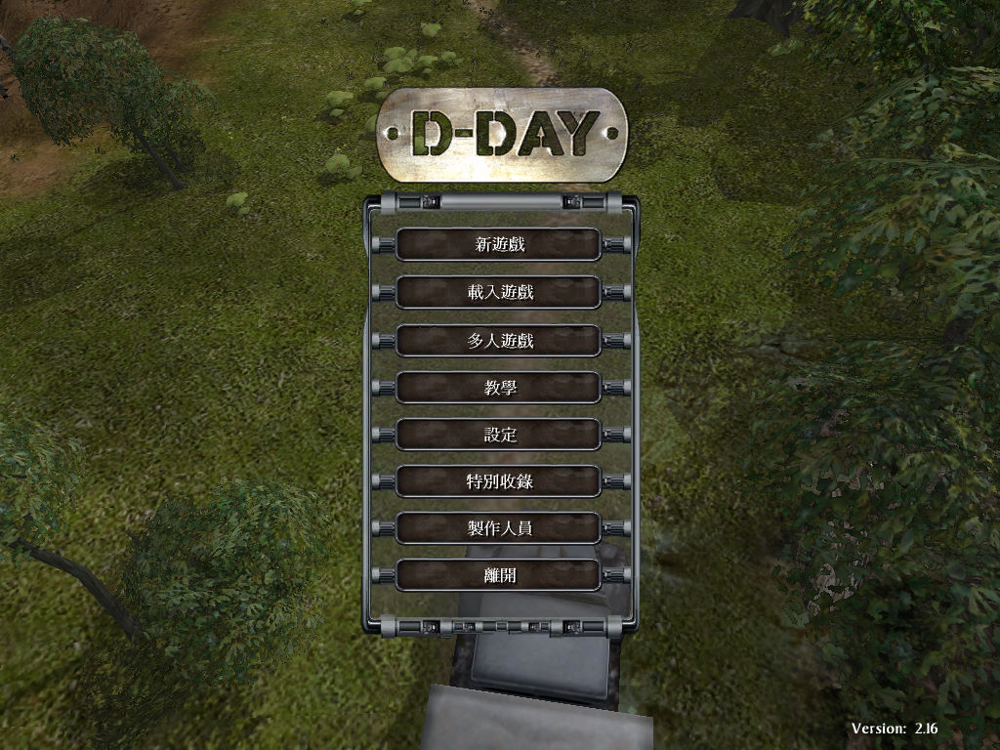
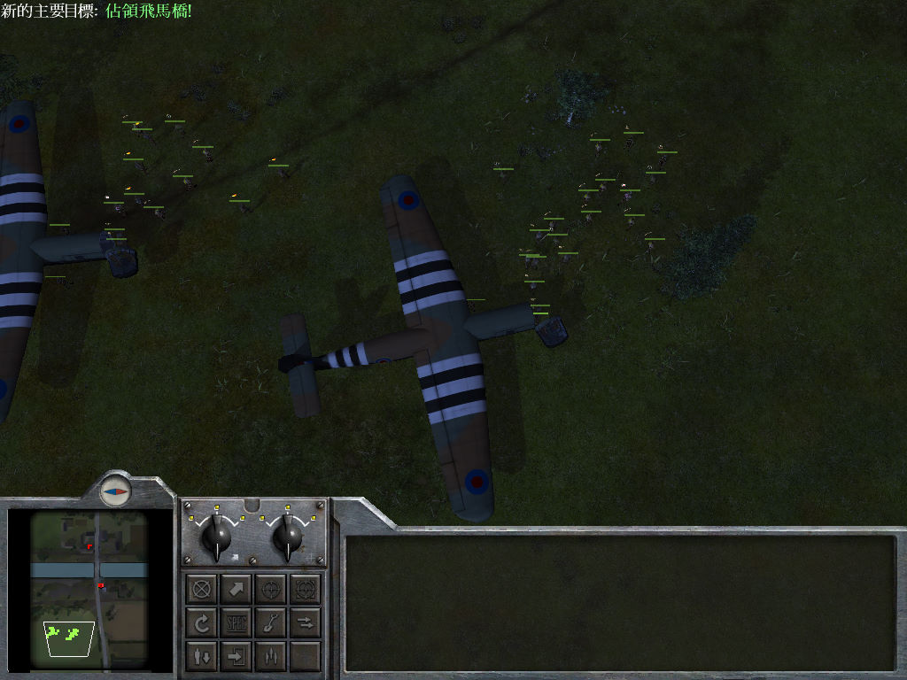

名稱：諾曼地／登陸諾曼底：最長的一日 (D-Day，中文版)
簡介：Digital Reality 2004年出品的即時戰術遊戲，由Monte Cristo代理發行，台灣則由
英寶格代理發行中文版 [待補]。


保護：光碟StarForce 3.04
備註：繁中版為2.16版
備註：VirtualBox無法執行，虛擬機請使用VMware。
備註：繁中版執行若會當機，請使用2.16免光碟與修正檔。
檔案：minicd.rar = 最小光碟檢驗檔
nocd216.rar = 2.16免光碟與修正檔